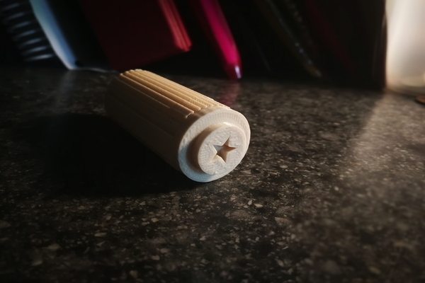

I learnt to sketch a seal stamp in fusion 360 from a youtube tutorial.
Sketching is fun, I chose to put a sphere on top of the coiled cylinder to make it seems more vintage and I made the bottom a star like in the tutorial.
I wanted to make a Star of David though, it would seem much cooler.
After sketching, I put the file into makerbot and then used the 3D printer to print it.
